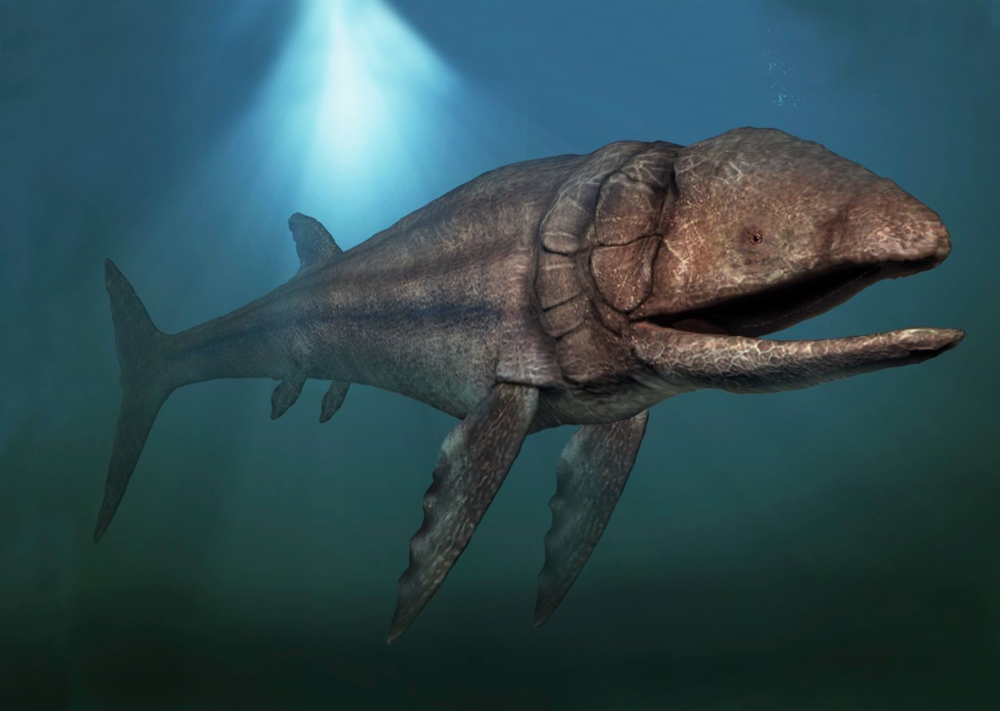
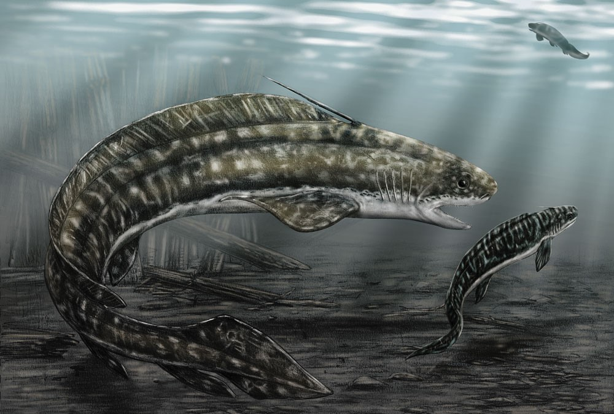
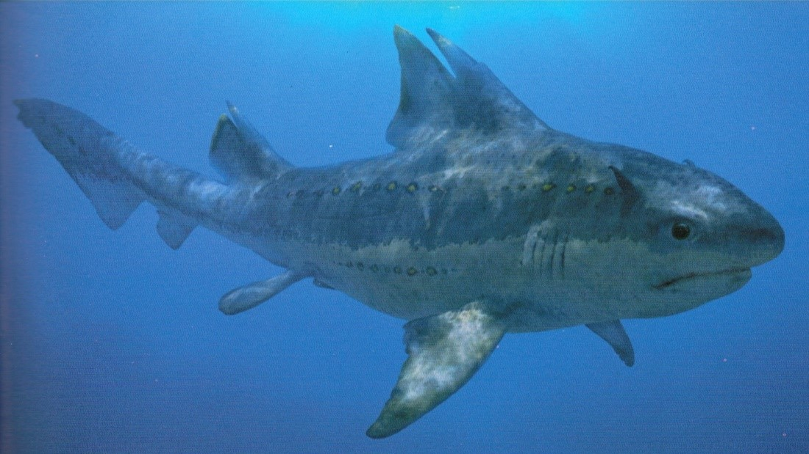
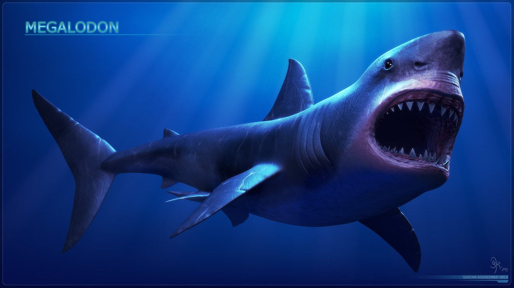
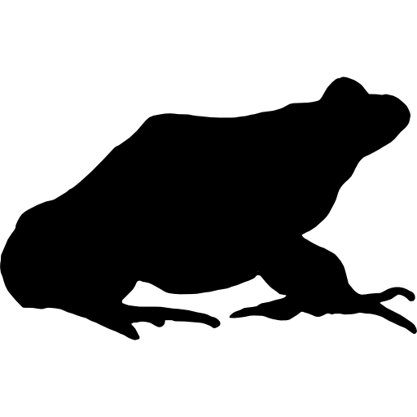
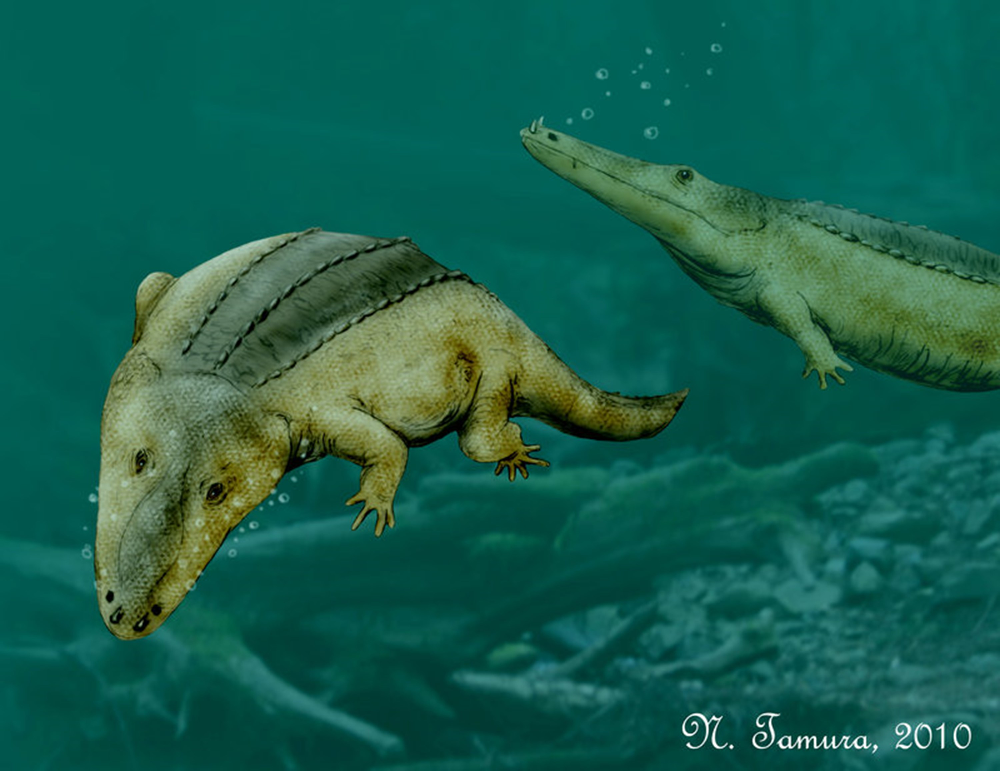
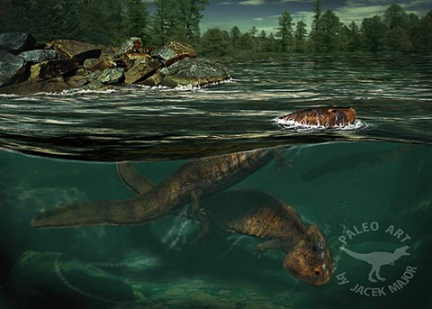
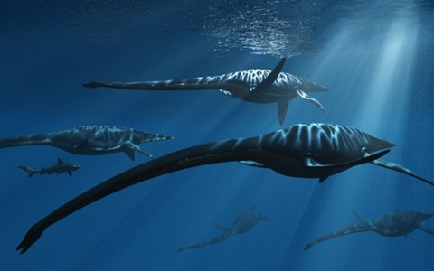
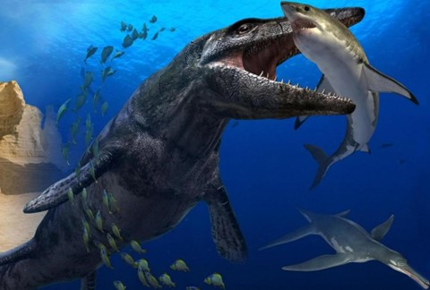
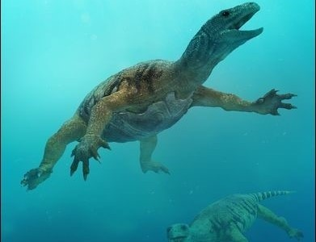

-
Pachycormidae
Descrição
Época: Triássico Inferior ao Cretáceo Inferior
Hábito: Carnívoros
Habitat: Aquático/ Marinho
Tamanho: Até 16 metrosMais info...
Trata-se de uma família de peixes, do mesmo grupo da maioria dos que temos à mesa. O maior peixe fóssil já encontrado está nesse grupo e podia chegar até aproximadamente 16 metros. Os Leedsichthys, por maior que fossem, eram inofensivos, sendo filtradores especializados em comer zooplânctons, pequenos peixes, águas-vivas e camarões. -
Xenacanthida
Descrição
Época: Devoniano ao Triássico Superior
Hábito: Carnívoro / Predadores
Habitat: Aquático / Água doce
Tamanho: 1 a 4 metrosMais info...
Uma ordem de tubarões pertencentes à 1ª irradiação do grupo. Evidências indicam que em tempos difíceis, alguns grupos eram canibais, predando os espécimes jovens. -
Hybodontidae
Descrição
Época: Carbonífero Inferior ao Cretáceo Superior
Hábito: Carnívoro / Predador oportunista
Habitat: Aquático / Marinho
Tamanho: Até 2 metrosMais info...
Família pertencente à 2ª irradiação dos tubarões. Não eram muito grandes e tinham a boca pequena, mas já possuíam o formato de corpo dos tubarões que lhe ajudavam na rápida natação, de forma a surpreender as presas. Também possuía uma estrutura óssea na frente das nadadeiras dorsais que servia de defesa. -
Lamnidae
Descrição
Época: Jurássico aos tempos atuais
Hábito: Carnívoro / Predador
Habitat: Aquático / Marinho
Tamanho: 2 à 17 metrosMais info...
3ª irradiação dos tubarões. Essa é a família em que o conhecido tubarão branco (que chega à 6 metros de comprimento) está inserida. Seu representante extinto mais notório é o Carcharodon magalodon, espécie gigantesca que tinha entre 12 à 17 metros. Cabe uma família de 6 pessoas dentro de sua boca! -
Capitosauroidea
Descrição
Época: Triássico Inferior até o Jurássico (poucos grupos)
Hábito: Predador / Carnívoro
Habitat: Semiaquáticos / Água doce
Tamanho: 2 à 4 metros
Mais info...
Uma das antigas linhagens dos anfíbios, possuía um crânio grande e plano que podia ter mais de um metro de comprimento nos maiores animais. Capturavam suas presas abrindo a parte superior de sua boca, sugando para dentro os peixes e outros pequenos animais. Nem fazia esforço para lanchar! -
Chigutisauridae
Descrição
Época: Triássico Inferior ao Cretáceo Inferior
Hábito: Predador / Carnívoro
Habitat: Semiaquáticos / Água doce
Tamanho: 2 à 5 metros
Mais info...
Uma das antigas famílias de anfíbios que mais viveram. O gênero mais notório do grupo é o Koolasuchus (4-5 metros de comprimento) que vivia em vales na Austrália, onde na época era muito frio no inverno para os crocodilos, seus maiores rivais, conseguirem sobreviver. Ainda bem, ninguém gostaria de estar no meio de uma competição entre esses dois! -
Elasmosauridae
Descrição
Época: Jurássico Inferior ao Cretáceo Superior
Hábito: Predador / Carnívoro
Habitat: Aquático / Marinho
Tamanho: 3 à 14 metros
Mais info...
Pertenciam ao grupo dos répteis. Levando em conta sua morfologia, provavelmente nadavam devagar e usavam seu longo pescoço para movimentos rápidos afim de capturar suas presas, animais pequenos que viviam em grupos. -
Pliosauridae
Descrição
Época: Jurássico Inferior ao Cretáceo Superior
Hábito: Predador / Carnívoro
Habitat: Aquático / Marinho
Tamanho: 3 à 15 metros
Mais info...
Animal marinho do grupo dos répteis facilmente reconhecido pelo seu grande crânio, que pode chegar a 3 metros de comprimento e consiste em cerca de ¼ do tamanho total do animal. Possuíam um sistema sofisticado de rastreamento através da audição e olfato além de serem predadores vorazes, caçando até mesmo outros grandes répteis marinhos. -
Odontochelyidea
Descrição
Época: Triássico Superior
Hábito: Carnívoro
Habitat: Aquático / Marinho
Tamanho: Aproximadamente 40 cm
Mais info...
Uma das tartarugas mais antigas que se tem registro. Ao contrário das que conhecemos hoje em dia, esse animal tinha dentes e apenas a parte de baixo da carapaça, o plastrão. Acredita-se que ela seja uma boa representante para se explicar a origem da carapaça.